Associate
Claude Certified Associate - Foundations
The whole certification as bullets and pictures, with the official exam keywords and the real situations behind each one.
Module 1
Platform & Model Foundations
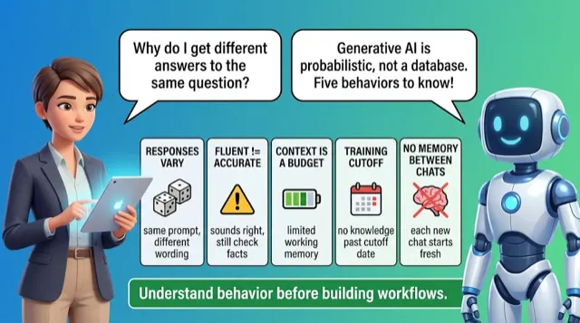
Foundations & Behavior
- Probability, not retrieval: expect variation
- Fluency signals nothing about accuracy
- Working memory fills, instructions lose force
- Training cutoff: post-date facts need current source
Important to learn · exam keywords
Knowledge sources
Same recipe, different loaf: confident crust never proves it's cooked inside
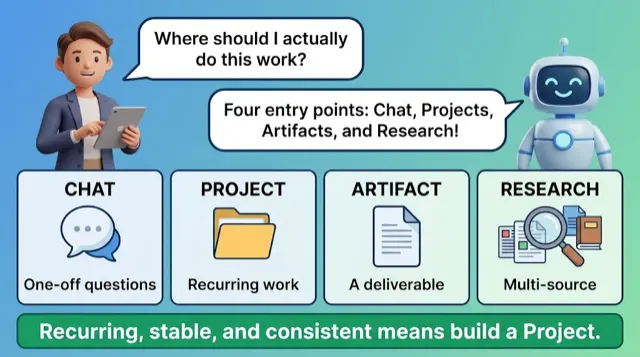
Entry Points
- Chat: default, no persistence or knowledge base
- Projects persist instructions, knowledge, conversation history
- Artifacts for editable deliverables, not inline replies
- Build Project when task recurs, context stable
Important to learn · exam keywords
ResearchArtifactsChatProjectsKnowledge sources
Standing workbench: tools and instructions stay laid out, never reloaded
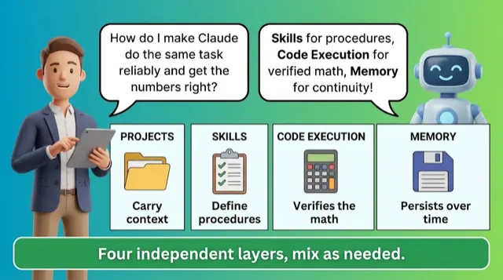
Capability Layer
- Four independent layers, combined per task
- Skills live account-level, invoked automatically
- Code Execution verifies numbers, not prose
- Project-scoped Memory keeps client contexts separate
Important to learn · exam keywords
PersistProject instructions
Kitchen's four stations: pantry, recipes, scale, order-book, combined per dish
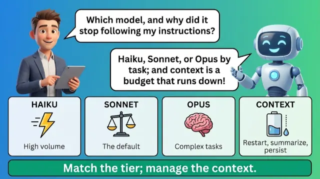
Models & Quiz
- Haiku volume, Sonnet default, Opus high-stakes
- Opus better on complex tasks but slower
- Working-memory budget runs down, compresses detail
- Context degrades: restart, summarize, or persist
Important to learn · exam keywords
HaikuOpusPersistRestartSonnet
Scooter, sedan, truck: trade speed against thoroughness by trip weight
Module 2
Prompting & Task Execution
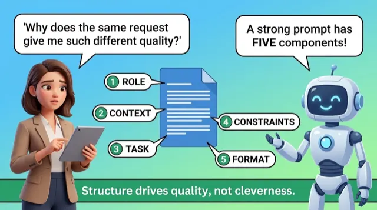
Prompt Anatomy
- Five components: role, context, task, constraints, format
- Quick question needs task; deliverable needs five
- Context gap: knowledge unshared, prompts underperform
- Thirty seconds specifying saves correction rounds
Important to learn · exam keywords
Effective prompts
Ordering "food" leaves cook guessing; name dish, portion, spice, plating
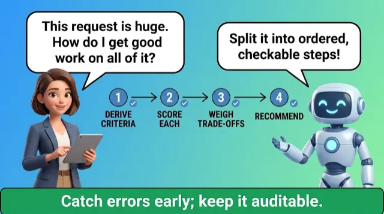
Task Decomposition
- One prompt, several stages: shallow everywhere
- Each step yields checkable intermediate result
- Extract shared understanding first, prevent inconsistent interpretations
- Dependent steps one conversation, independent steps separate
Important to learn · exam keywords
Stakeholder communicationTask decomposition
Cook chops, seasons, plates in order: taste before next step
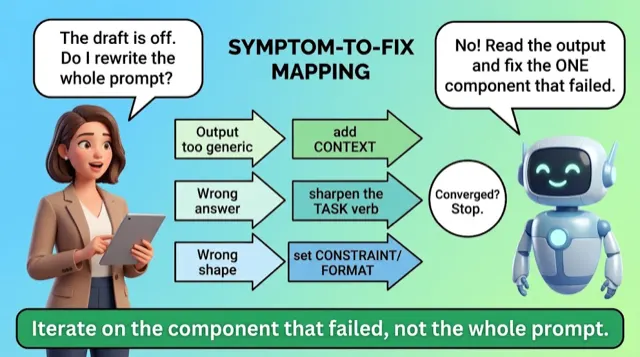
Iterating Prompts
- Diagnose which component failed, fix one
- Generic output signals thin context: add background
- Off tone reveals missing constraint to add
- Converged when rounds bring marginal change
Important to learn · exam keywords
Drafting promptingPrompt iteration
Taste the soup: salt, time, or heat, don't restart
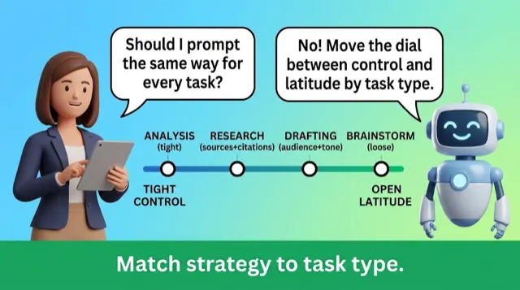
Strategy & Quiz
- Component stack universal, emphasis shifts by task
- Analysis tightens criteria; brainstorming loosens constraints
- Research wants scope, citations; drafting specifies audience
- Research: clear scope, checkable citations
Important to learn · exam keywords
Analysis promptingBrainstorming promptingDrafting promptingResearch prompting
Steer tight through alley, loosen grip on open highway
Module 3
Evaluating & Validating Claude's Output
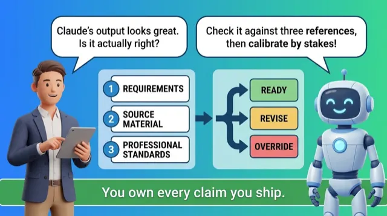
Discernment
- Evaluation checks three fixed references, same every time
- Match review depth to stakes
- Sort output: ready, needs revision, human override
- Completeness reviewed separately from accuracy
Important to learn · exam keywords
AccuracyCompletenessRequirements analysisAnalysis promptingBrainstorming prompting
Building inspector: same code checklist every job, never how finished it looks
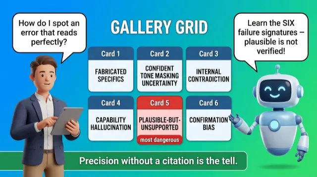
Failure Patterns
- Plausible is not verified; fluency hides errors
- Treat claimed external actions as unverified
- Completeness failures concentrate where attention is lowest
- Catch by known signatures, not visible breakage
Important to learn · exam keywords
BiasHallucinationsInconsistencies
Counterfeit note feels crisp; teller checks watermark, not confidence
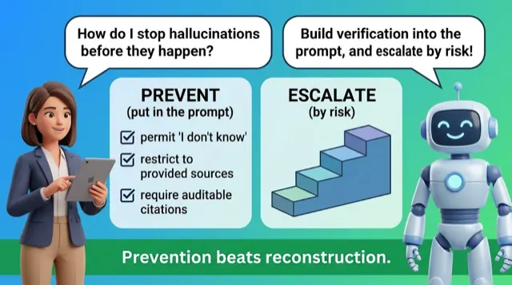
Grounding & Diligence
- Build verification into prompt before output exists
- Grounding bounds generation to supplied sources
- Escalate by policy: stakes, reversibility, audience, regulatory
- Diminishing returns hit; accountability never transfers
Important to learn · exam keywords
Human reviewFact-checkingRequirements analysisPrompt iterationAuthoritative source
Pre-flight checklist: cheaper to catch faults on ground than at altitude
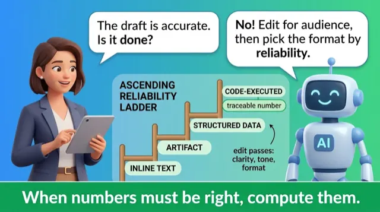
Editing, Formats & Quiz
- Claude drafts; editing pass makes deliverable
- Facts hold steady; calibrate tone per audience
- Format is reliability decision; code-executed for numbers
- Organized inputs produce organized outputs
Important to learn · exam keywords
Artifacts / inline / structured dataEdit / adapt / refine / compare
Chef plates same dish differently for lunch counter versus formal dinner
Module 4
Workflow Integration & Solution Design
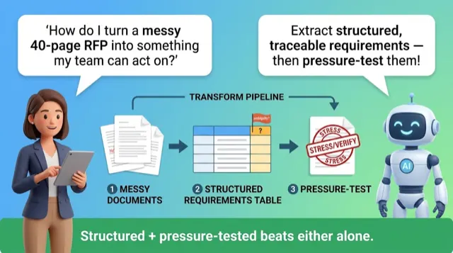
Requirements
- Claude converts vague need into task definitions
- Pressure-test pass surfaces ambiguous requirements
- Hidden requirements in clauses cost teams the bid
Important to learn · exam keywords
Use casesBusiness tasks
Tailor asks occasion, fabric, fit before touching the cloth
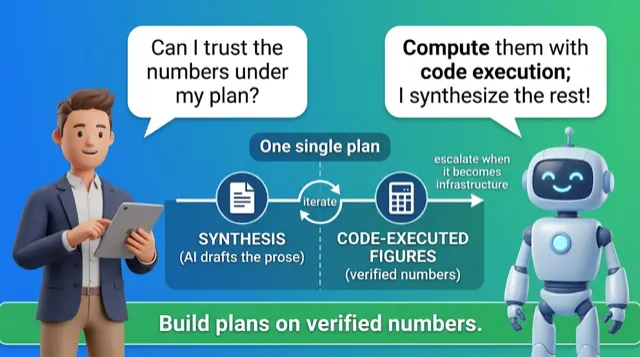
Planning & Design
- Synthesis Claude excels; calculation verified via code
- Design loop: ideate, prototype, feedback, refine
- Judgment steps weighing risk stay human
- System others depend on outgrows Associate scope
Important to learn · exam keywords
PlanningSolution design
Cook lets assistant chop but weighs flour on a scale
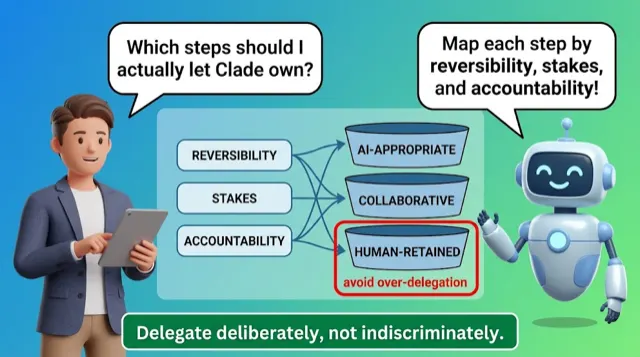
Delegation Mapping
- Map workflow step by step, assign ownership
- Classify AI, human-retained, or collaborative by criteria
- Embed Skill for procedures, code for data
- Over-delegation exceeds what risk profile justifies
Important to learn · exam keywords
Workflow redesign
Kitchen shift: trainee plates salads, chef seasons, both taste risky recipe
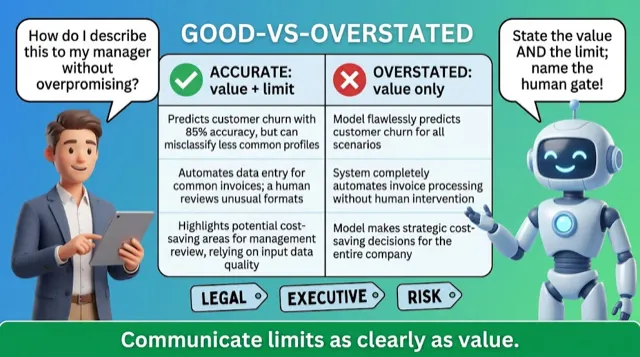
Stakeholders & Quiz
- Credibility from accurate claims, no inflation
- State what tool does, name human checkpoint
- Match message to audience AI literacy
- Naming review gate makes workflow defensible
Important to learn · exam keywords
LimitationsValue
Pharmacist says what pill treats, adds doctor confirms the dose
Module 5
Configuration & Knowledge Management
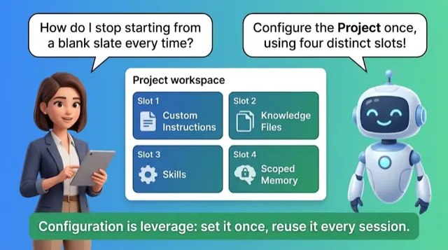
Configuring Projects
- Build context, instructions, procedures at baseline
- Project Memory scoped per client, never leaks
- Stable facts in knowledge, decisions in Memory
- Behavior rules pair with their knowledge
Important to learn · exam keywords
ProjectsClaude Projects
Chef keeps standing prep plus per-order tickets, never mixed across tables
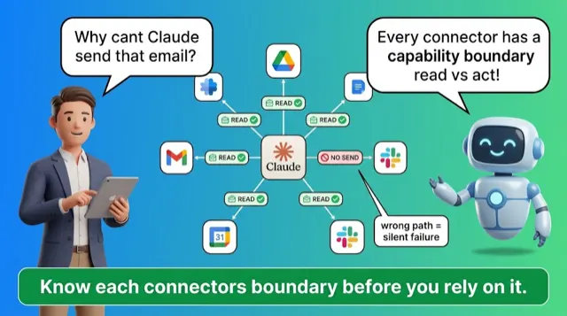
Connectors & Knowledge
- Connector reaches external systems you authorize
- Connect deliberately, not everything by default
- Know where each connector's capability ends
- Keep knowledge current, deduplicated to avoid miscitation
Important to learn · exam keywords
ConnectorsUploaded knowledge
House-sitter keys open only needed rooms, some look but not take
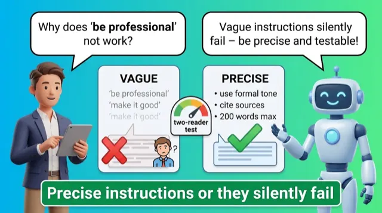
Persistent Instructions
- Persistent instructions bake guardrails in once
- Highest value: what you retype constantly
- Embed format, tone, guardrails ahead of need
- Vague instructions silently fail; precise wording wins
Important to learn · exam keywords
System-level instructions
One clear door sign beats repeating the rule to every visitor
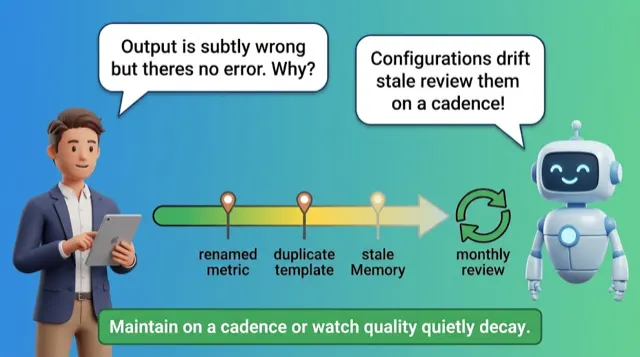
Maintenance & Quiz
- Stale configuration degrades output quietly, no error
- Monthly review for active Projects catches drift
- Custom Skills update only on re-upload
- Treat Memory as working file: review, reset
Important to learn · exam keywords
Configuration maintenance
Pantry silently fills with expired jars until a dish tastes wrong
Module 6
Governance, Risk & Responsible Use
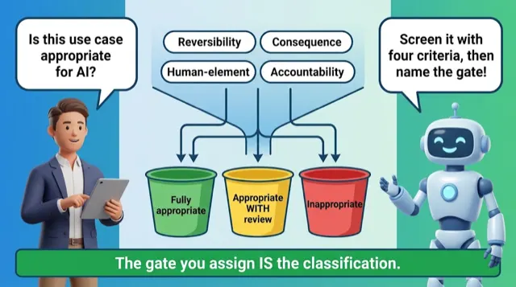
Use Cases
- Defined gate names reviewer, risk, timing
- "Human in the loop" isn't a gate
- Screen against Delegation criteria before deploying
- Ask who is answerable for AI results
Important to learn · exam keywords
Use casesAppropriate use caseInappropriate use case
Head chef tastes every plate for salt before it leaves the pass
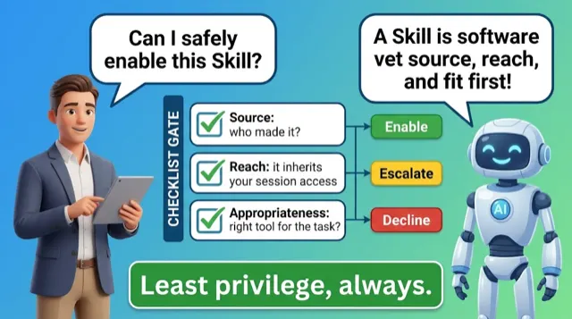
Skill Trust
- Skill is software accessing session, running code
- Run three trust checks before enabling
- Enable, Escalate, or Decline by proportionality
- Grant narrowest access, revisit when job changes
Important to learn
Least Privilege GeneralizesEnable · Escalate · Decline
Before handing keys, ask who sent them and which rooms
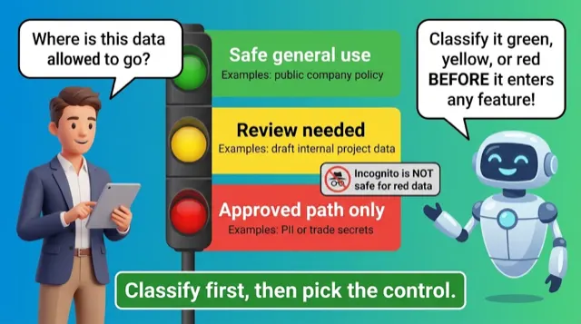
Data Sensitivity
- Classify data green, yellow, red first
- Incognito never makes red data safe
- Partial redaction still identifies in small populations
- When unsure, treat as more sensitive tier
Important to learn · exam keywords
Data sensitivityPrivacy
Sort laundry whites, colours, delicates; one delicate ruins the load
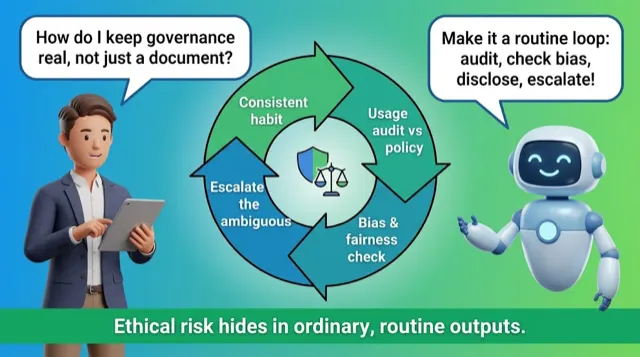
Policies & Ethics
- Governance means consistent framework plus real auditing
- Check bias, fairness, transparency in routine review
- Escalate when population large or harm significant
- Documented reasoning beats bringing a verdict
Important to learn · exam keywords
Organizational AI policyEthical implicationsGovernance standards
Lifeguard scans every swimmer, not only when manager watches
Module 7
Troubleshooting & Optimization
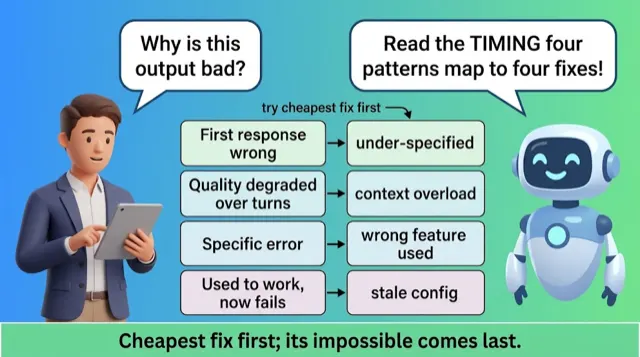
Diagnosing
- Run diagnostic sequence before concluding Claude cannot
- Expectation mismatch: no prompt or config fixes
- Fix mismatch by reshaping task or range
- Read symptom timing to name failure pattern
Important to learn · exam keywords
RestartUnderperforming prompts
Don't rebuild the engine to drive across an ocean
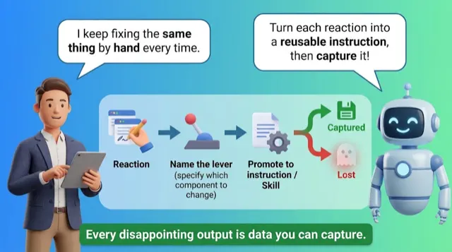
Adjusting from Feedback
- Treat disappointing output as diagnostic data
- Turn reaction into instruction naming specific lever
- Unnamed lever means next attempt is guess
- Promote recurring fix into configuration
Important to learn · exam keywords
Feedback
Salty soup: name salt, broth, or instruction before fixing
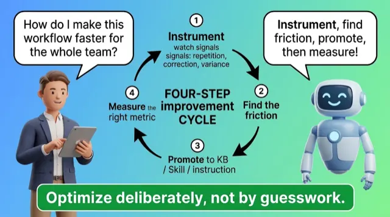
Optimizing & Quiz
- Instrument workflow, find friction, promote fix
- Watch one full cycle for removable steps
- Apply rule-reference-procedure test to place each
- Pick metric matching why workflow mattered
Important to learn
Validate Before You CommitWorked Example: A Workflow Efficiency Audit
Watch your morning routine, move each step to its home
Module 8
Course Summary & Next Steps
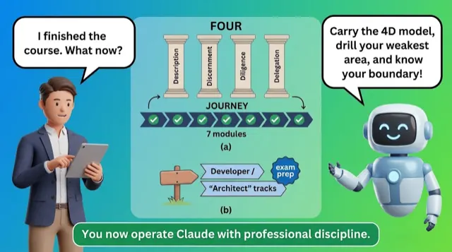
Summary & Next Steps
- Modules form dependency chain, not separate topics
- Structure, validation, delegation, configuration, governance mark reliability
- Exam scenario-style: rework weakest module's frameworks
- Knowing what not to attempt, escalating boundary
Important to learn · exam keywords
Workflow integration
Cook selects, seasons, then tastes: each step enables the next